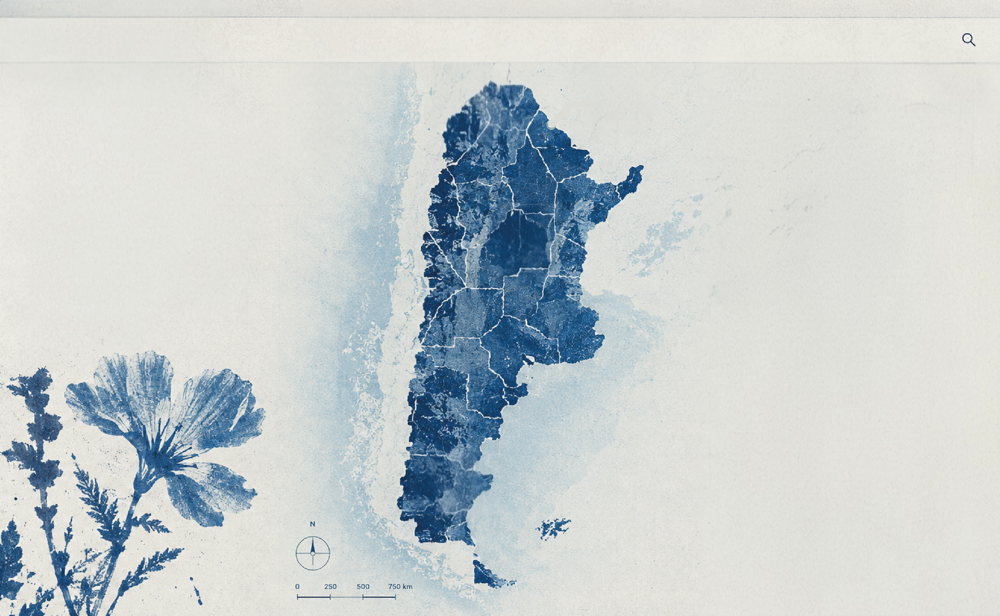

UN PAÍS,
MIL PAISAJES
SEGUÍ LAS HUELLAS DE DARWIN POR ARGENTINA.
Explorá nueve paradas de su viaje entre 1832 y 1834 y descubrí los paisajes, las especies y las observaciones que registró.
Tocá los puntos del mapa para descubrir cada parada.
